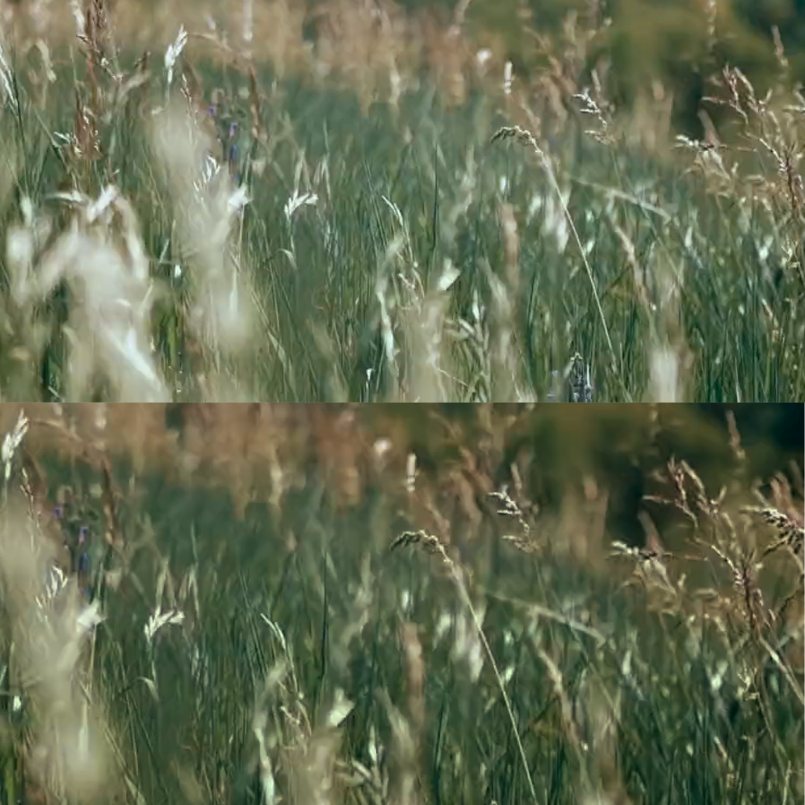

The Beginner's Guide to Color Correction
Published on June 29, 2025 • 5 min read
Transform Your Videos: A Practical Color Guide to Get You Started Today
Recurring Problems
Have you ever recorded a scene that looked great live, but on the computer, it looked 'washed out' and lifeless, with strange colors or other issues?
Well, I bring you great news: fixing these and other problems that may arise is easier than it seems. The process is called Color Correction, and it's a fundamental step that puts you on the right path to becoming a renowned professional. Now, let's understand and demystify this process through its main pillars: Exposure, Contrast, Saturation, and the famous LUTs.
Section 1: The Starting Point - Correction vs. Grading
Imagine that correction is the technical part of an 'image cleanup'. That is, we're going to fix all the problems an image/video might have. After all, no video is recorded perfectly. Any type of material (image, video, or audio) should be treated with the highest possible quality. Some of the problems we'll solve are: adjusting a white that is too yellow, brightening a dark scene, and ensuring that the colors look natural and balanced.
Once all that is done, we get to the part where we create a mood, which would be: grading. This part aims to create an emotion, visual style, or mood, as previously mentioned. Valid examples would be from the films: *The Matrix*, where we have green tones, and *Blade Runner 2049*, where we have more orange hues.
In this guide, we will focus on the first and most important step: a good correction.
Section 2: The 3 Pillars of Correction
2.1. Exposure (Adjusting Brightness)
What is it? It's how bright or dark your overall image is. An overexposed image is too bright, 'blowing out' the whites and losing detail. An underexposed image is too dark, hiding information in the shadows.
How to adjust: In your editing software, look for controls like 'Exposure', 'Brightness', or 'Gain'.
Visual Tip: Place an image with 3 versions: Underexposed | Correct | Overexposed.
2.2. Contrast (Creating Depth)
What is it? It's the difference between the brightest areas and the darkest areas of the image. Low contrast results in a 'washed out', flat image. High contrast makes the whites brighter and the blacks deeper, creating a three-dimensional feel.
How to adjust: Use the 'Contrast' control. For a finer adjustment, manipulate 'Highlights' and 'Shadows' separately.
Visual Tip: Place an image side-by-side: Low Contrast vs. High Contrast.
2.3. Saturation (The Intensity of Color)
What is it? It's the 'purity' or intensity of the colors. With zero saturation, your image is black and white. With high saturation, the colors become super vibrant, almost neon.
How to adjust: Use the 'Saturation' control. Be careful: a common beginner mistake is to overdo it and make skin tones look artificial. A safer alternative is the 'Vibrance' control, which increases the intensity of less saturated colors and protects skin tones.
Visual Tip: Show 3 versions of the same image: Desaturated | Normal Saturation | Oversaturated.
Section 3: The Magic "Shortcut" - What are LUTs?
Think of a LUT (Look-Up Table) as an Instagram filter for videos, only much more powerful and precise.
It's essentially a text file that maps colors, basically telling the software: 'Take this white and transform it into a darker tone.' There are technical LUTs (for converting camera formats) and creative LUTs (for applying a 'film look,' for example).
In most software, there is an effect called 'Apply LUT' (or 'Creative LUT' in Premiere's Lumetri Color), where you can load the .cube or .3dl file.
Golden Rule: Always apply creative LUTs after doing the basic exposure and contrast correction. A LUT works best on an already balanced image.
Conclusion
Mastering these concepts is the first step to having full control over your images and giving them a professional finish. Color correction is a journey of continuous learning. So, train your eye to observe the colors around you and, most importantly, have fun in the process of transforming your images and creating emotions through color.